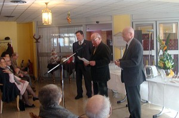

Monsieur le Maire, Mesdames, Messieurs,
Je remercie d’abord Monsieur Michel APCHIN le maire de notre ville qui honore de sa présence notre habituelle cérémonie de nouvel an.
J’adresse mes vœux les plus chaleureux à tous nos résidants, notamment pour que l’année 2013 les garde tous dans le meilleur état de santé possible.
Mes vœux s’adressent particulièrement à notre doyenne, Madame Renée VIGNON qui est dans sa 104ème année, je précise que ce sera chose faite le 29 juin prochain et qui pour autant n’a rien perdu de son élégance et de son étonnante et remarquable vivacité d’esprit, entretenue il est vrai par des parties de Scrabble acharnées et quotidiennes.
Bravo Madame Vignon, vous êtes un exemple, et en vous offrant ces modestes fleurs, par l’intermédiaire de Chantal notre estimée gouvernante, je vous adresse mes respectueuses et admiratives félicitations.
J’adresse également mes vœux aux membres du personnel et à leur Directeur M MOLVEAU et je les remercie de leurs dévouements et de leurs actions attentives pour le meilleur service auprès de nos résidents.
L’année 2012 a vu votre conseil syndical se réunir 5 fois. Notamment pour l’organisation de la Journée Portes ouvertes du 16 juin.
Les membres du Conseil syndical qui assurait les visites ont reçus 48 personnes soit un chiffre très inférieur à l’année précédente, où nous avons enregistré 104 visiteurs.
Toutefois il est à noter que le jour même de notre manifestation un appartement à été loué à un couple.
La réussite d’une journée Portes ouvertes n’est pas directement liée au nombre de visiteurs, car le bouche à oreilles qui s’en suit et les contacts qui sont noués ce jour là, permettent des relances qui ont été très bien exploitées par notre chargé de communication M. JML qui a réussi à maintenir notre vacance à 6 appartement au jour d’aujourd’hui ; avec l’espérance de ramener ce chiffre à 3 au mois de mars.
Pour arriver à ce résultat çà n’est pas moins de 14 nouveaux résidents que je salue également qui nous ont rejoints depuis les dernières portes ouvertes.
L’âge moyen de nos résidents étant de 87 ans ½, certaines personnes sont amenées du jour au lendemain à nous quitter pour rejoindre un établissement totalement médicalisé.
C’est pourquoi notre action de communication est si importante.
J’en profite pour adresser mes vives félicitations à M Léger qui se dépense sans compter en rendez vous, relances téléphoniques, mails, visites sur place, En aides aux estimations de remise en état des appartements, etc.
Les actions de communication que conduit M Léger ont également pour conséquence de faire connaître notre belle ville de Saumur à nombre de personnes d’autres régions de France, qui sont à la recherche d’un lieu de retraite au meilleur rapport qualité environnement prix et à ce titre, je pense que M Léger même si sa modestie doit en souffrir, mérite de rejoindre le groupe des ambassadeurs de la Ville, en tout cas c’est une suggestion M Le Maire.
Notre prochaine journée Portes ouvertes aura lieu le 18 mai prochain à cette occasion diverses actions de publicité auront lieu dans les médias et coté visuel rue d’Alsace, un calicot de 4 m de long sera installé sur un portique placé au dessus du portillon.
Dans le Même domaine votre conseil syndical a décidé la création d’un nouveau site internet qui est dès maintenant opérationnel il est accessible à l’adresse www.bocagesaintlouis.fr.
En effet il était impératif de moderniser notre site et de le rendre plus attractif pour rivaliser avec nos concurrents, notamment la nouvelle résidence MONTANA de Cholet dont l’action est très agressif.
Même si les concepts sont différents d’une résidence services à l’autre, la communication via internet est d’une importance absolument primordiale.
En ce qui concerne les charges, votre conseil syndical a validé les propositions de budget de l’association qui gère l’hôtellerie restauration par l’intermédiaire de notre prestataire, Les tarifs au 1er Janvier ont été majorés de 2,5 %.
Ce qui est pratiquement incompressible puisque la seule révision annuelle du contrat Sodexo représente 90 % de cette augmentation. J’en profite pour saluer mon ami Jean louis petit qui préside l’association et qui gère au plus juste son budget tout en poursuivant une très belle rénovation presque achevée, de nos chambres d’invités qui sont je le rappelle ouvertes à tous comme notre restaurant d’ailleurs.
Dans ce chapitre et compte tenu du matraquage fiscal qui s’abat sur les patrimoines ainsi que sur les retraites qui vont être amputées de nouvelles taxes, voire frappées de réductions autoritaires et drastiques, votre conseil syndical va proposer à la prochaine assemblée générale de copropriété, des charges générales, c’est-à-dire un budget de fonctionnement très rigoureux, en renégociant entre autre une certain nombre de contrats de nos fournisseurs.
Quant aux investissements, c’est-à-dire les appels de fonds travaux, ils seront arrêtés au minimum obligatoire, toutefois dans le respect de l’équité mais de façon à limiter l’ensemble des charges au moindre coût, tout en préservant notamment l’aspect des façades en parfait état.
Pour clore le chapitre du conseil syndical je voulais également vous informe que 2 nouveaux membres sont venus le rejoindre il s’agit de Messieurs DE JOURDAN ET QUELIN que je salue.
Avant de terminer je voudrais remercier M Fourrez qui réside avec madame dans notre maison depuis Juin 2012 et qui en tant qu’ancien professeur de musique anime de façon magistrale au piano les instants musicaux du lundi qui sont des moments très appréciés des résidants.
Enfin je renouvelle à tous mes meilleurs vœux pour la nouvelle année et vous remercie de votre attention.
 Maisons des Vins de Loire
Maisons des Vins de Loire{kind=link}